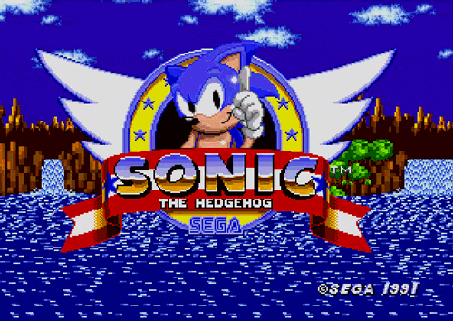

O Fenómeno do Retro-Gaming
O retro-gaming representa a preservação e a celebração da história dos videojogos. Mais do que nostalgia, compreende o estudo da evolução multimédia ao longo das décadas.

Explorar plataformas clássicas permite-nos entender como limitações de hardware inspiraram soluções criativas brilhantes na área de design gráfico e sonoro.
Alguns dos jogos mais marcantes
| Título do Jogo | Consola | Ano | Género | Produtora |
|---|